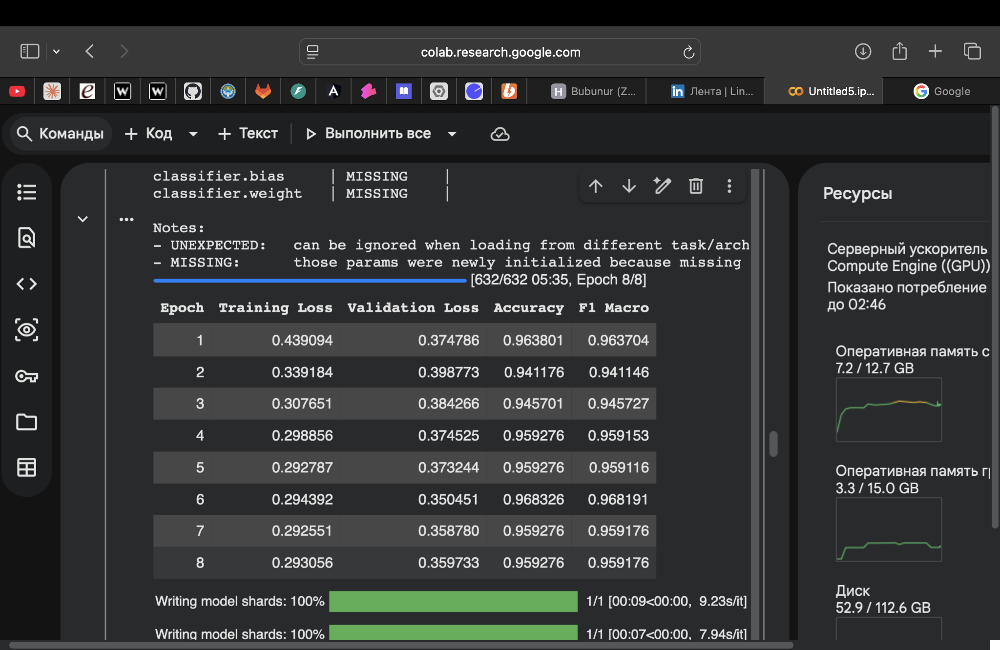
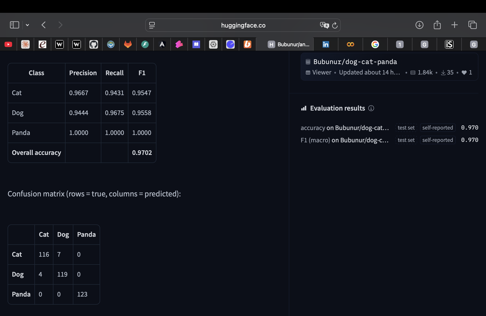
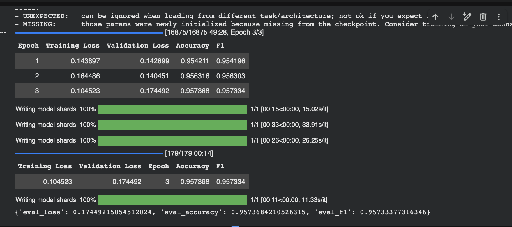
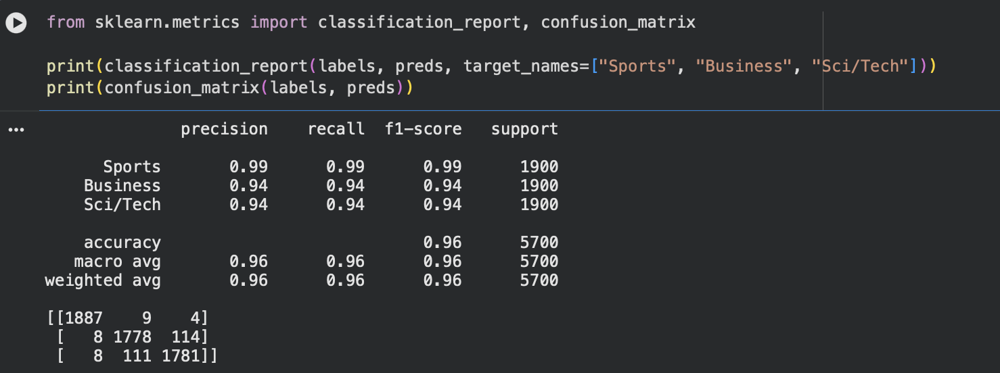

Классификатор животных
Метрики результатов модели классификации изображений. Были датасеты изображений животных, но в них не было изображений панд, поэтому решила сделать свой маленький датасет. Чтобы в ручную не скачивать 3000+ изображений решила вытягивать их с открытых источников (iNaturalist). Ссылка на датасет

Классификатор животных
Файнтюнила модель google/vit-base-patch16-224-in21k . Эпох сделала 8, точность получилась 97% Ссылка на модель

Классификатор новостей
Был реализован файнтюнинг microsoft/deberta-v3-base на датасете ag_news Ссылка на модель

Результаты
Пробить потолок 95% не удалось, меняла модели, хотела поменять датасет, но в других датасетах данные по категориям были не равными.